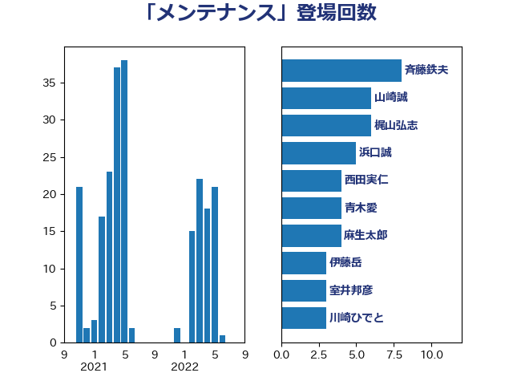

単語「メンテナンス」

| 斉藤鉄夫 | 公明党 | 8 回 |
| 山崎誠 | 立憲民主党 | 6 回 |
| 梶山弘志 | 自由民主党 | 6 回 |
| 浜口誠 | 国民民主党 | 5 回 |
| 西田実仁 | 公明党 | 4 回 |
| 青木愛 | 立憲民主党 | 4 回 |
| 麻生太郎 | 自由民主党 | 4 回 |
| 伊藤岳 | 日本共産党 | 3 回 |
| 室井邦彦 | 日本維新の会 | 3 回 |
| 川崎ひでと | 自由民主党 | 3 回 |
| 萩生田光一 | 自由民主党 | 3 回 |
| 谷田川元 | 立憲民主党 | 3 回 |
| 伊藤孝恵 | 国民民主党 | 2 回 |
| 大島敦 | 立憲民主党 | 2 回 |
| 安達澄 | 無所属 | 2 回 |
| 山本剛正 | 日本維新の会 | 2 回 |
| 川田龍平 | 立憲民主党 | 2 回 |
| 打越さく良 | 立憲民主党 | 2 回 |
| 田名部匡代 | 立憲民主党 | 2 回 |
| 秋野公造 | 公明党 | 2 回 |
| 茂木敏充 | 自由民主党 | 2 回 |
| 赤羽一嘉 | 公明党 | 2 回 |
| 長浜博行 | 無所属 | 2 回 |
| 須藤元気 | 無所属 | 2 回 |
| こやり隆史 | 自由民主党 | 1 回 |
| 上田清司 | 国民民主党 | 1 回 |
| 中西健治 | 自由民主党 | 1 回 |
| 中谷真一 | 自由民主党 | 1 回 |
| 井坂信彦 | 立憲民主党 | 1 回 |
| 伊波洋一 | 無所属 | 1 回 |
| 吉田宣弘 | 公明党 | 1 回 |
| 和田有一朗 | 日本維新の会 | 1 回 |
| 坂本祐之輔 | 立憲民主党 | 1 回 |
| 大口善徳 | 公明党 | 1 回 |
| 大塚耕平 | 国民民主党 | 1 回 |
| 大家敏志 | 自由民主党 | 1 回 |
| 大西英男 | 自由民主党 | 1 回 |
| 寺田学 | 立憲民主党 | 1 回 |
| 小倉將信 | 自由民主党 | 1 回 |
| 山本博司 | 公明党 | 1 回 |
| 山添拓 | 日本共産党 | 1 回 |
| 岡本三成 | 公明党 | 1 回 |
| 斎藤アレックス | 国民民主党 | 1 回 |
| 日下正喜 | 公明党 | 1 回 |
| 朝日健太郎 | 自由民主党 | 1 回 |
| 林芳正 | 自由民主党 | 1 回 |
| 森屋隆 | 立憲民主党 | 1 回 |
| 水岡俊一 | 立憲民主党 | 1 回 |
| 河西宏一 | 公明党 | 1 回 |
| 浜地雅一 | 公明党 | 1 回 |
| 渡辺猛之 | 自由民主党 | 1 回 |
| 湯原俊二 | 立憲民主党 | 1 回 |
| 滝波宏文 | 自由民主党 | 1 回 |
| 牧島かれん | 自由民主党 | 1 回 |
| 田村まみ | 国民民主党 | 1 回 |
| 石井正弘 | 自由民主党 | 1 回 |
| 石井苗子 | 日本維新の会 | 1 回 |
| 石川博崇 | 公明党 | 1 回 |
| 石川香織 | 立憲民主党 | 1 回 |
| 礒崎哲史 | 国民民主党 | 1 回 |
| 福重隆浩 | 公明党 | 1 回 |
| 竹内真二 | 公明党 | 1 回 |
| 竹内譲 | 公明党 | 1 回 |
| 笠井亮 | 日本共産党 | 1 回 |
| 藤巻健太 | 日本維新の会 | 1 回 |
| 西岡秀子 | 国民民主党 | 1 回 |
| 赤嶺政賢 | 日本共産党 | 1 回 |
| 足立敏之 | 自由民主党 | 1 回 |
| 鈴木俊一 | 自由民主党 | 1 回 |
| 鈴木義弘 | 国民民主党 | 1 回 |
| 高橋はるみ | 自由民主党 | 1 回 |
| 高橋千鶴子 | 日本共産党 | 1 回 |
| 高階恵美子 | 自由民主党 | 1 回 |